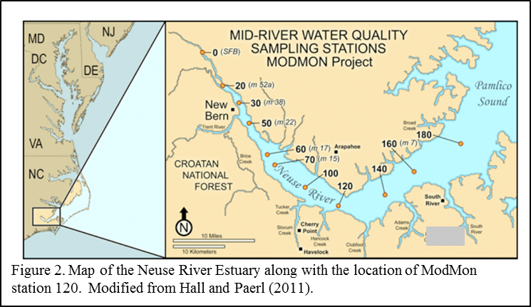

Current Research
- 
Molecular Insights into a Dinoflagellate Bloom
Estuaries are highly dynamic and productive ecosystems, characterized by significant temporal and spatial gradients in both biotic and abiotic factors. As primary producers, phytoplankton play an important role in estuaries, thus a clear understanding of how phytoplankton respond to spatiotemporal environmental gradients is necessary to ensuring healthy and sustainable ecosystems. Our research focuses on elucidating the interactions between biotic and abiotic factors through combining plankton molecular physiology with more traditional water quality measurements to reveal the fundamental cellular processes that guide these interactions. Using a combination of transcriptomic sequencing and network analysis, we detected distinct inferred phytoplankton physiologies within the Neuse River Estuary (NRE), with phytoplankton allocating more resources to cellular component synthesis and carbon metabolism in the upper estuary, and to nutrient metabolisms and transporters in the lower estuary, consistent with gradients in nitrogen availability. Nutrient concentrations were shown to have positive correlation with cellular component synthesis and metabolic activities, and negative correlation with nutrient metabolisms and transporters. The relationship between phytoplankton metabolic functions as inferred through metatranscriptomic sequencing and environmental factors lays a solid foundation for examining how phytoplankton are responding to environmental changes, and is thus a valuable tool for marine ecosystem modeling and algal bloom prediction, which can be applied not just in the NRE, but to coastal waters worldwide.
Funded by North Carolina Sea Grant
- Comparison between 18s, transcriptomic and mophological taxonomic identification
Past Research
In coastal waters worldwide, an increase in frequency and intensity of algal blooms has been attributed to eutrophication, with further increases predicted due to climate change. Yet, the cellular-level changes that occur in blooming algae remain largely unknown. In this research, comparative metatranscriptomics was used to investigate the underlying molecular mechanisms associated with a dinoflagellate bloom in a eutrophied estuary. We found that under bloom conditions, there is increased expression of metabolic pathways indicative of rapidly growing cells, including energy production, carbon metabolism, transporters and synthesis of cellular membrane components. In addition, there is a prominence of highly expressed genes involved in synthesis of membrane-associated molecules, including those for the production of glycosaminoglycans (GAGs), which may serve roles in nutrient acquisition and/or cell surface adhesion. Biotin and thiamine synthesis genes also increased expression along with several cobalamin biosynthesis-associated genes, suggesting processing of B12 intermediates by dinoflagellates. The patterns in gene expression observed are consistent with bloom-forming dinoflagellates eliciting a cellular response to elevated nutrient demands and to promote interactions with their surrounding bacterial consortia possibly in an effort to cultivate for enhancement of vitamin and nutrient exchanges and/or direct consumption. Our findings provide potential molecular targets for bloom characterization and management efforts.
Funded by North Carolina Sea Grant